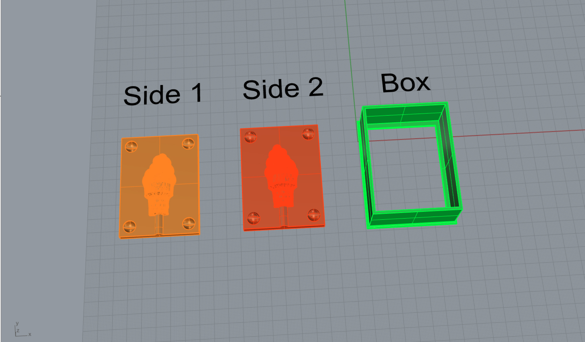
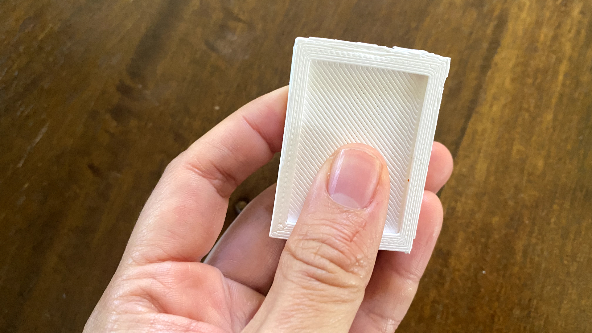
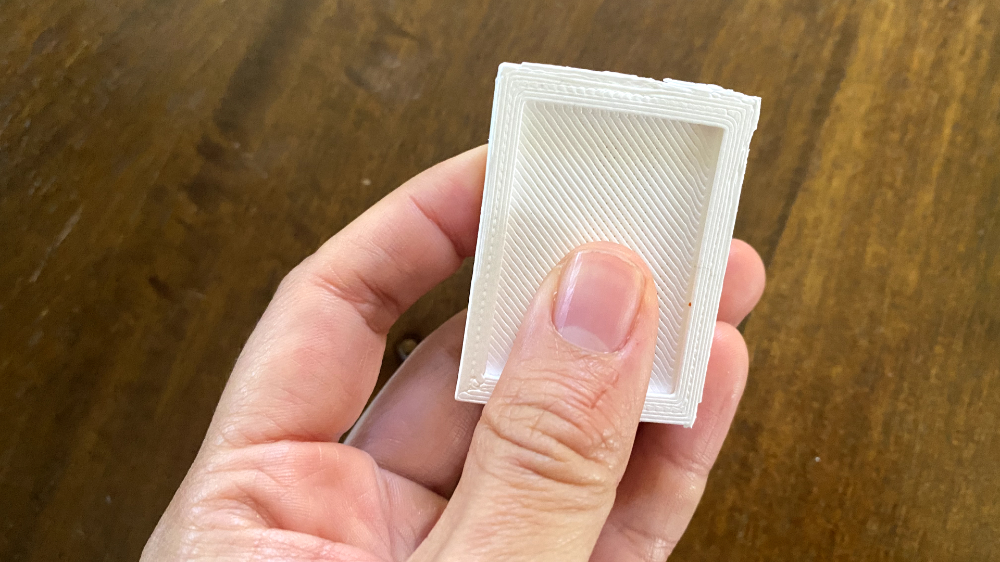
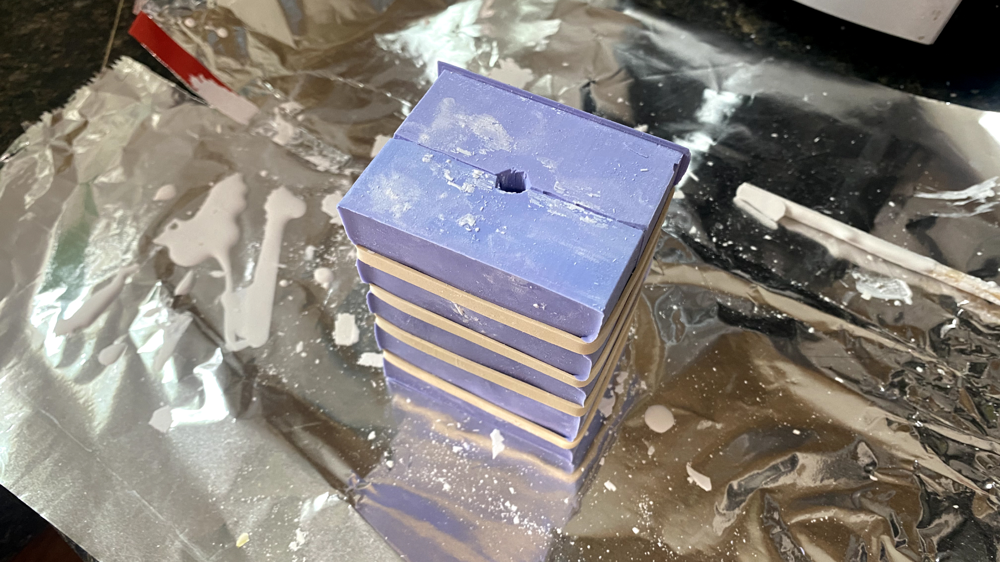

Process
I found a cute ice cream file on Thingiverse that I decided to use as my object to cast for this assignment. I liked the idea of handing out mini ice cream cones to people during winter.

The mesh for the cone needed some work, so I repaired it using "ReduceMesh" and "MeshRepair."
I combined them together using "MeshBooleanUnion" and then sliced it in half using "MeshBooleanSplit". I turned the object into a polysurface using "MeshtoNub" so it's easier to handle.

Then I used a bunch of Boolean commands to combine and subtract surfaces to create the mold for molds.
To make it easier for me to remove the silicone once it is set in my mold, I decided to separate the box structure of the mold into two parts: 1. The flat surface with the shape I want to cast 2. The container that the flat surface will sit in. It has a hole in the back for me to press into to take out my mold.
The ice cream mesh that I had downloaded from Thingiverse had some issues with non-manifold edges. For that reason, when I converted it into a polysurface using the "MeshtoNurb" command, I wasn't able to BooleanUnion one half of the ice cream object to its base container.
However, I wondered if Cura wouldn't see that as an error to print since it was still a closed polysurface. I decided to scale down my model by 50% to do a quick test print.

It took about an hour to print the model. They both printed well! And luckily they fit nicely into the mold container. I learned through the print that the ice cream cone on one side of the mold wasn't at the same z-axis point as the other side. I corrected it in Rhino.
 


I printed the mold of molds at actual size. To save myself the hours of print time and headache, I printed just one container to be used for both sides.
Once I had my 3d-printed mold of molds, I started the process of casting the silicone mold. Following the recommended safety instructions, I wore safety goggles, a mask protecting my nose and mouth, and vinyl gloves. Besides the Ooomoo liquids, other materials I used, included 4 plastic cups, popsicle sticks (for stirring the mixture), a garbage bag to lay beneath the materials, and paper towels.
I poured the blue and pink liquids into separate cups at equal measure. I then poured them both into a third cup, being careful to also scrape out the same amount of liquids from each cup. I eyeballed this.
I stirred the combined mixture for about 3 minutes until I could no longer see the individual blue and pink colors.
I actually poured that mixture into a fourth cup since no amount of diligent scraping and stirring would mix in the isolated color at the bottom of the cup.
I then poured that mixture slowly into one corner of my 3d-printed mold until the mixture filled the container to its brim
Since I printed only one container, I cast the silicone one side at a time. I did this in the evening before bed to give the material sufficient time to cure overnight.
Once the silicone had cured, firm to the touch, I popped the mold out by pressing firmly into the bottom of the container, which was the back plate of one side of the mold.
With minimal force, the silicone mold popped out easily.
After doing this to the other side, I trimmed the edges of my silicone mold and bound them together using rubber bands.
I divided the plaster powder equally into four compostable sandwich bags. I poured about 1/8th cup of water into the bag, zipped it up, and mushed the mixture from outside the bag with my hands until it was thoroughly integrated. It was easier to pour into the pouring vent when the mixture had the thickness of pancake batter.
Using scissors, I snipped a tiny piece of the corner of the bag to transform it into a kind of pastry bag. I squeezed out the mixture from that hole into the pour hole.
I don't know if this did anything, but I also used one wooden chopstick to occasionally poke into the pouring hole in an effort to ensure every corner of the cavity was filled with the plaster.
It took about half an hour to 40 minutes for the plaster to harden.
After I removed the plaster object from the mold, I broke off the cast pouring vent at the bottom.

Special Thanks
As always, a HUGE thank you to Junchao! For your availability and responsiveness and for teaching me about the "Contour" command in Rhino. I always learn something new everytime I talk to you.
Thanks to Sara Cagle for her friendship and support throughout the week and for sharing amazing learning resources.